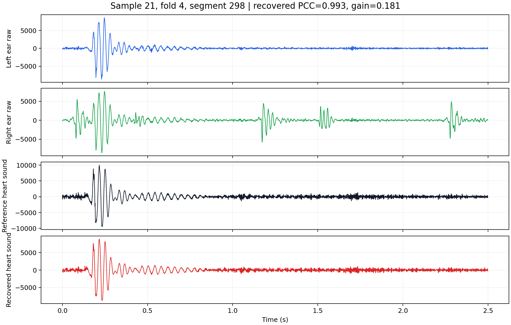
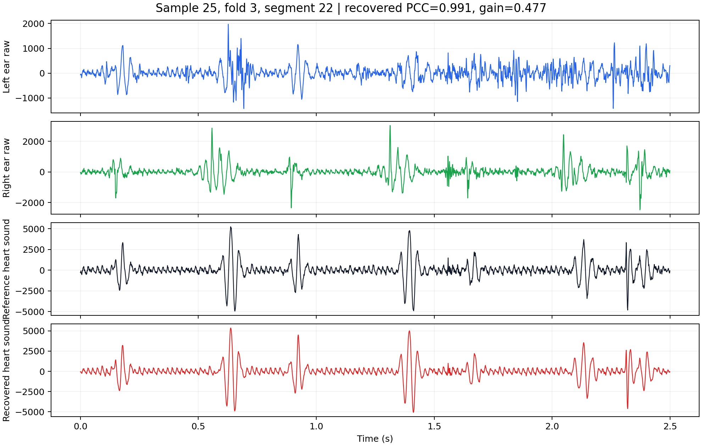
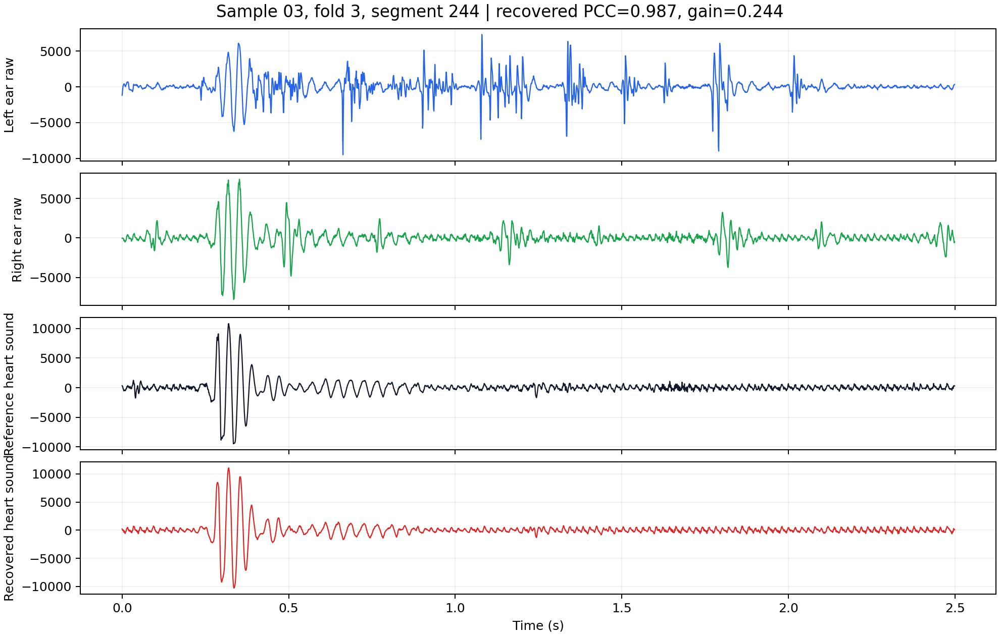
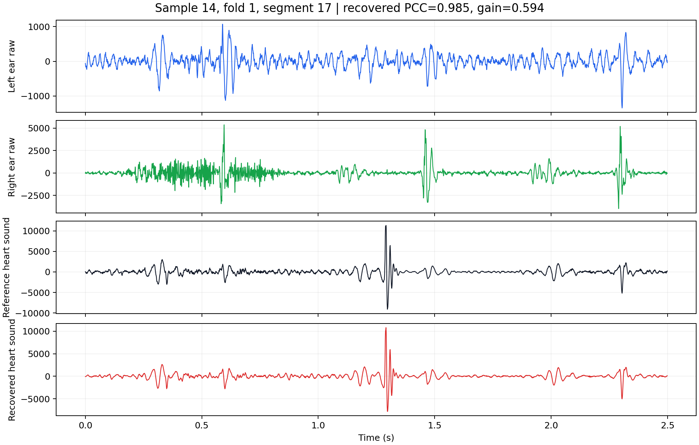
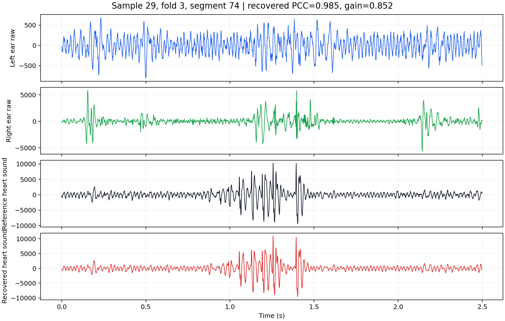
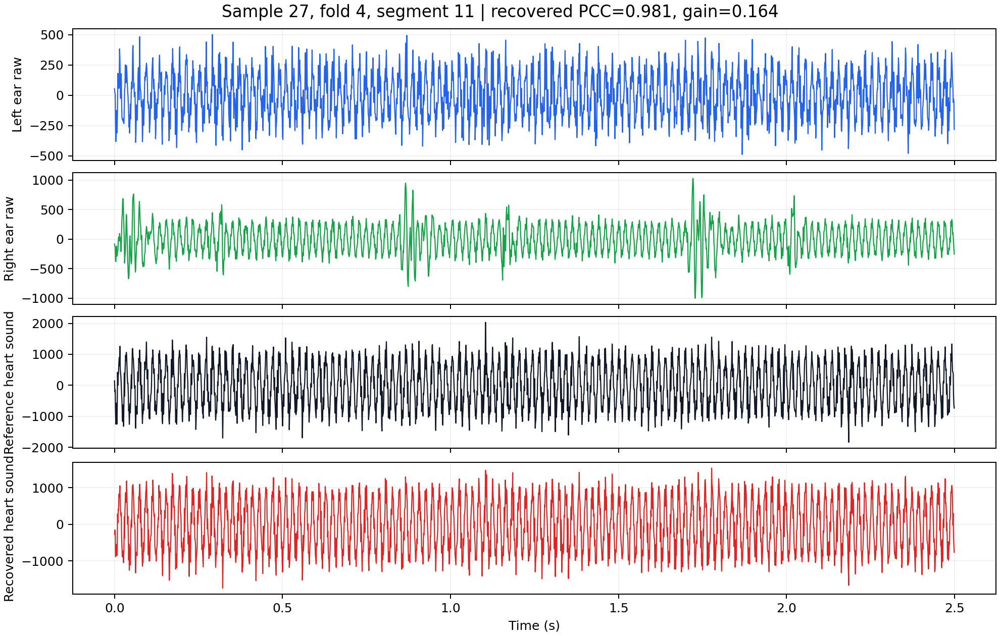

Automatically selected high-PCC examples from held-out segment-mixed test folds. Each row provides the raw left/right in-ear signals, the reference heart sound, and the DCUNet recovered heart sound.
Click "Reveal waveform" to inspect the aligned left-ear, right-ear, reference, and recovered waveforms. Audio files are 16 kHz PCM WAV for browser compatibility.
| Example | Metrics | Left / Right Ear Raw | Reference / Recovered Heart Sound | Waveform |
|---|---|---|---|---|
| Example 1 Sample 21 Fold 4, segment 298 |
Recovered PCC: 0.9928 Input PCC: 0.8118 / 0.6929 Gain: 0.1810 |
Left ear raw Right ear raw | Reference Recovered | Reveal waveform |
| Example 2 Sample 25 Fold 3, segment 22 |
Recovered PCC: 0.9911 Input PCC: 0.5141 / -0.0378 Gain: 0.4770 |
Left ear raw Right ear raw | Reference Recovered | Reveal waveform |
| Example 3 Sample 03 Fold 3, segment 244 |
Recovered PCC: 0.9868 Input PCC: 0.4590 / 0.7425 Gain: 0.2444 |
Left ear raw Right ear raw | Reference Recovered | Reveal waveform |
| Example 4 Sample 14 Fold 1, segment 17 |
Recovered PCC: 0.9855 Input PCC: 0.3911 / 0.1536 Gain: 0.5943 |
Left ear raw Right ear raw | Reference Recovered | Reveal waveform |
| Example 5 Sample 29 Fold 3, segment 74 |
Recovered PCC: 0.9854 Input PCC: 0.0196 / 0.1330 Gain: 0.8524 |
Left ear raw Right ear raw | Reference Recovered | Reveal waveform |
| Example 6 Sample 27 Fold 4, segment 11 |
Recovered PCC: 0.9811 Input PCC: 0.8171 / 0.7808 Gain: 0.1640 |
Left ear raw Right ear raw | Reference Recovered | Reveal waveform |